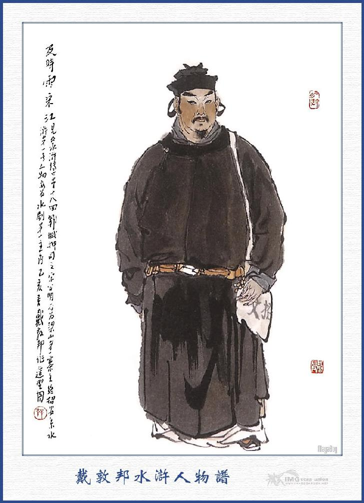
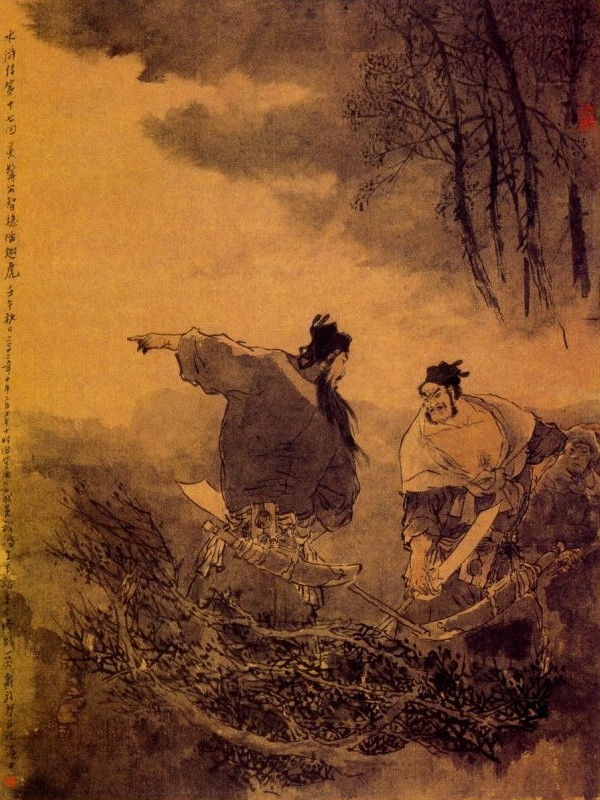
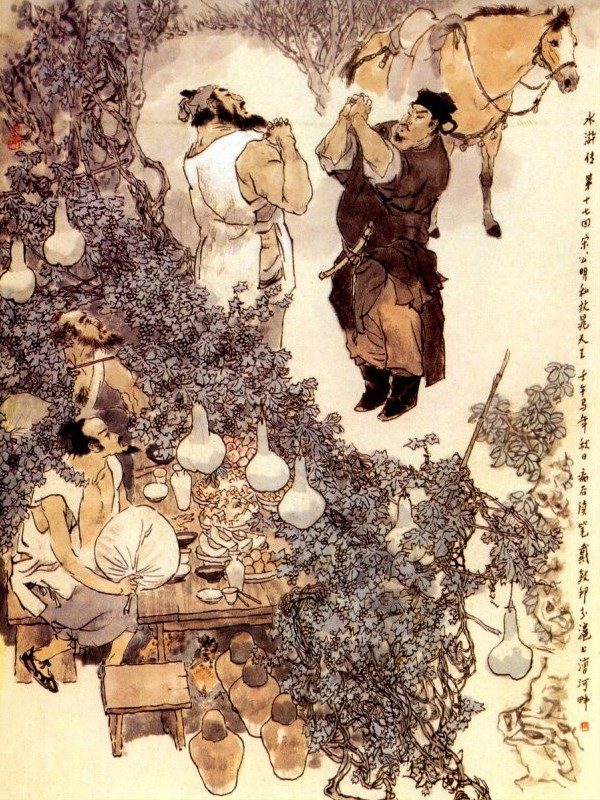

Bấy giờ Hà Đào nghe em nói thì bán tín bán nghi, liền nói luôn rằng:
- Tiền này là tiền quan trên treo thưởng, em cứ cầm lấy rồi sẽ có trọng thưởng về sau. Bây giờ em hãy nói cho anh biết bọn kia ở trong túi là thế nào?
Hà Thanh thong thả móc ra một tập giấy rồi trỏ mà bảo anh rằng:
- Bọn cướp ấy ở đây tất cả.
- Làm sao lại viết vào đấy?
- Chẳng dấu gì Ca Ca: Dạo trước vì tôi có thua bạc, không còn một đồng nào trong túi, sau có bọn con bạc rủ đến thôn An Lạc, cách ngoài cửa Bắc chừng 15 dặm, tới một khách điếm họ Vương để đánh chơi với họ, nhân bấy giờ có giấy quan sức, phàm các hàng cơm phải đóng sổ biên tên tuổi quê quán những hành khách qua trọ và phải cho rõ là đi đâu làm việc gì, để bất thần quan tư khám xét và một tháng đem trình sở tại một lần. Nhưng vì Tiểu nhị ca không biết chữ nên phải nhờ tôi viết giúp hộ trong nửa tháng trời. Một hôm vào khoảng mồng ba tháng sáu, chợt có một bọn bảy người buôn táo, kéo bảy cỗ xe Giang Châu đến nghỉ ở hàng. Trong bọn ấy tôi biết một người đi đầu là Tiểu Bảo Chính ở thôn Đông Khê, vì dạo trước có một người con bạc đã dẫn tôi đến nhà ông ta một lần. Khi tôi mang sổ ra hỏi tên họ để biên thì có một người râu ba chòm mặt trắng bệch chạy đến mà nói với tôi rằng: "Chúng tôi người họ Lý, ở Hào Thôn, buôn táo về Đông Kinh". Tôi nghe vậy cũng biên vào sổ, song trong lòng thì hơi lấy làm ngờ. Đến hôm sau chủ điếm đưa tôi đi đánh bạc, tới một chỗ ngã ba đường, lại gặp anh lạ mặt gánh đôi thùng đến đó, tôi không biết hắn là ai. Sau thấy chủ điếm gọi mà bảo rằng: "Bạch đại lang đi đâu đó?” Bấy giờ người kia đáp rằng: "Tôi có gánh dấm, đem vào làng bán đây ". Chủ điếm lại quay lại bảo tôi rằng: "Anh ấy là Bạch Nhật Thử Bạch Thắng là một tay con bạc đấy". Tôi nghe nói cứ an tâm như vậy. Sau thấy đồn ầm ĩ lên rằng: Trên đồi Hoàng Nê Cương, có bọn buôn táo đánh thuốc mê lũ công sai mà cướp đồ lễ sinh nhật, bấy giờ trong bụng tôi đoán chắc là lũ ấy chứ chẳng sai. Nay muốn biết đoan đích thì chỉ bắt tên Bạch Thắng đến đó là có thể tra ngay ra được. Cái này là tập sổ tay riêng của tôi, tôi sao chép lấy ở đấy.
Hà Đào nghe nói cả mừng, lập tức dẫn Hà Thanh vào trình với Tri phủ. Tri phủ gọi Hà Thanh vào nhà trong hỏi hết đầu đuôi mọi lẽ, phái tám tên công sai cùng với Hà Đào, Hà Thanh đi ngay đến nhà hàng rượu ở thôn An Lạc, để bắt đưa đến nhà Bạch Thắng.
Bấy giờ vào khoảng đầu trống canh ba, mấy người đưa nhau đến nhà Bạch Thắng, người chủ hàng đánh lừa để gọi người nhà ra mở cửa. Vào trong nhà thấy Bạch Thắng đương nằm rên rỉ trên giường, sau hỏi người vợ mới biết là hắn đang bị sốt. Khi dựng Bạch Thắng dậy thấy sắc mặt của hắn nửa hồng nửa trắng, chúng liền thừng trói lại mà quát hỏi rằng:
- Ở Hoàng Nê Cương làm việc gì có biết không?
Bạch Thắng giả làm không biết và không chịu nhận. Chúng lại tra khảo người vợ đều chối cả.
Về sau đám công sai đánh đóm đuốc đi tìm tang vật khắp cả mọi nơi, chợt thấy ở gầm giường có chỗ đất không phẳng, chúng bèn đào lên để xem. Vừa đào được ba thước đất thì chúng bỗng kêu reo ầm ĩ rồi lôi lên một bọc kim ngân ở đó. Đoạn rồi bắt hai vợ chồng Bạch Thắng và mang các đồ tang vật ấy mà hoả tốc giải về Tế Châu. Sáng hôm sau quan phủ đem ra tra hỏi căn nguyên, Bạch Thắng nhất định không chịu xưng xuất cho Tiều Cái. Tri phủ cả giận sai đánh bắn máu tươi ra mà quát lên rằng:
- Thằng đầu đảng, đây đã biết đích xác là Tiều Bảo Chính ở thôn Đông Khê huyện Vận Thành mày còn chối làm sao được nữa? Có muốn sống thì thú thực sáu tên kia ra, kẻo roi vọt khổ thân.
Bạch Thắng biết không sao chối nổi, liền thở dài một tiếng mà công nhận rằng:
- Việc ấy tôi chỉ biết có Tiều Bảo Chính là đầu đảng, đến rủ Bạch Thắng đi gánh rượu, còn sáu người kia không biết là ai cả.
Tri phủ nghe nói truyền rằng:
- Nếu vậy thì bắt tên Tiều Bảo Chính đến đây, sẽ bắt được sáu tên kia có khó gì?
Nói đoạn sai lấy gông tử tù nặng 20 cân gông Bạch Thắng lại và đem vợ giam vào một nhà giam đàn bà rồi cho thảo công văn cho Hà Đào đem hai mươi tên công sai nhanh nhẹn đi sang ngay Vận Thành, để hiệp đồng với bản huyện đi bắt Tiều Bảo Chính.
Lại sai hai tên Ngu hầu của Lương phủ, cùng đi với Hà Quan Sát; để nhận mặt mà bắt sáu tên kia. Hà Quan Sát vâng lĩnh các người rồi lập tức ra đi. Sang đến huyện Vận Thành, cho hai tên Ngu Hầu và bọn công sai vào nghỉ ở một hàng cơm rồi giắt một ít tiền và hai tên theo hầu, để vào huyện trình công văn. Khi vào đến phòng giấy thì quan Huyện vừa tan buổi hầu sớm, Hà Đào bèn đi ra một cửa hàng nước ở trước cửa Huyện, để uống nước và ngồi đợi. Hà Đào hỏi người hàng nước rằng:
- Trong huyện bây giờ làm sao mà vắng tanh như thế?
Nhà hàng đáp:
- Trong ấy vừa mới tan hầu xong, các người làm việc còn đi ăn uống, cho nên chưa ai đến cả.
Nhà hàng trỏ sang cổng huyện mà nói rằng:
- Kìa ông Áp Ty hôm nay đây kia.
Hà Đào ngẩng nom lên thì quả nhiên có một người Áp Ty ở trong huyện đương lững thững đi ra. Người ấy họ Tống tên là Giang, biểu tự là Công Minh, con thứ ba, nguyên quán ở Vận Thành, mặt đen, người thấp, thường gọi là Hắc Tam Lang Tống Giang, lại có tiếng là người hiếu để, bình sinh trọng nghĩa khinh tài, ai cũng gọi là Hiếu Nghĩa Hắc Tam Lang. Trên còn bố già là Tống Thái Công, mẹ thì mất sớm, có một người em tên là Thiết Phiến Tử Tống Thanh, cùng ở nhà với Thái Công, để trông nom vườn ruộng.
Tống Giang làm Áp Ty ở huyện Vận Thành, văn án tinh thông, sành nghề nha lại, tính thích chơi quyền chơi gậy, học được nhiều ngón võ, xưa nay lại hay kết nạp bọn hảo hán giang hồ, hễ ai đến đó, bất cứ thế nào, đều dung túng, chiều chuộng hết cả, đến khi ra đi lại giúp đỡ tiền nong tử tế. Nhất sinh coi rẻ đồng tiền. Hễ ai vay mượn hỏi xin là cho ngay không tiếc. Lại có tính hay làm ơn làm huệ, ai có việc gì ngang trái là dàn xếp can ngăn, kỳ cho thoả thuận mới thôi. Thỉnh thoảng lại cho áo quan, phát vị thuốc, cứu người khổ giúp kẻ nghèo, đỡ người nguy cấp, thương kẻ khốn cùng, bởi thế nên khắp mặt Sơn Đông Hà Bắc, ai ai cũng tôn là Cập Thời Vũ Tống Minh Công, ý nói cũng như trận mưa phải thời, ở lưng trời tưới xuống để cứu muôn vật vậy. Bấy giờ Hà Quan Sát thấy Tống Giang cùng với một tên theo hầu ở cổng huyện đi ra, bèn chạy đến đón để mời vào hàng nói chuyện. Tống Giang thấy Hà Đào ăn mặc ra dáng một người làm việc quan thì cũng đáp lễ tử tế rồi hỏi rằng:
- Ngài ở đâu đến đây?
Hà Đào đáp:
- Xin mời Áp Ty vào hàng uống nước rồi sẽ nói chuyện.
Tống Giang vâng, bảo người theo hầu đứng đợi ngoài cửa rồi đi vào hàng với Hà Đào. Tống Giang cất tiếng hỏi:
- Chẳng hay tôn huynh là ai?
Hà Đào đáp:
- Thưa ngài, tôi là Hà Đào, ở phòng Tập bộ Sứ thần bên phủ Tế Châu, dám hỏi cao tính đại danh là gì?
- Thế thì tôi không được biết, xin Quan Sát tha lỗi cho. Thưa Quan Sát tôi đây là Tống Giang làm Áp Ty ở đây.
Hà Đào nghe nói rồi thụp xuống lạy mà rằng:
- Tôi nghe tiếng đã lâu, hôm nay được biết ngài ở đây.
Tống Giang cung kính mà rằng:
- Chết nỗi! Xin Quan Sát chớ thế! đón Quan Sát ngồi trên. Có đâu tôi dám ngồi trên? Quan Sát là người ở Thượng Ty, vả lại là khách xa đến đây, xin ngài ngồi trên cho.
Hà Đào nhất định không nghe, nhường nhau lâu rồi, Tống Giang ngồi chủ vị mà Hà Đào ngồi khách vị. Tống Giang gọi nhà hàng pha trà lên, hai người cùng uống rồi Tống Giang hỏi Hà Đào rằng:
- Quan Sát qua tới huyện tôi đây, có việc gì ở Thượng Ty chăng?
- Chẳng dấu gì ngài, có mấy việc khẩn yếu ở huyện này, tôi phải đến nói với ngài đây.
- Hay là việc trộm cướp chi đó, thưa ngài?
Hà Đào nói:
- Hiện nay tôi có mang công văn ở phủ đến đây, xin nhờ Áp Ty giúp cho.
- Vâng, Quan Sát là Thượng Ty cắt xuống, để sai bảo chúng tôi, khi nào tôi dám trễ nải, nhưng không biết rằng việc gì khẩn cấp thế thưa ngài?
- Áp Ty hiện đương giữ phần việc, vậy tôi xin nói để Áp Ty nghe: Nguyên bên Phủ tôi có phát ra một vụ cướp ở Hoàng Nê Cương, tụi ấy tám người đánh thuốc mê bọn thủ hạ quan Lương Trung Thư phủ Đại Danh Bắc Kinh mà lấy hết các đồ lễ mừng sinh nhật quan Xài Thái Sư, tất cả 10 vạn quan tiền, nay bắt được một tên đồng đảng tên là Bạch Thắng, có khai rằng bảy tên kia, đều ở huyện đây cả. Hiện có người thân mật của quan Thái Sư sai ra ở phủ tôi để đợi bắt bọn ấy đem về, giải Đông Kinh ngay lập tức, mong rằng Áp Ty sẽ hết sức giúp ngay cho.
Hà Đào nói:
- Chính là tên Tiều Bảo Chính ở thôn Đông Khê, thuộc huyện ngài đây làm đầu đảng, còn sáu người nữa chưa biết tên họ là chi, vậy xin phiền Áp Ty dụng tâm cho một chút.
Tống Giang nghe nói ngạc nhiên kinh lạ, trong bụng nghĩ thầm: "Tiều Cái là anh em tâm phúc của mình, nay phạm tội tày trời như thế, nếu ta lại không ra tay cứu giúp mà để cho quan tư bắt được thì tính mệnh tất không còn.” Chàng nghĩ vậy thì lòng riêng áy náy rồi đáp rằng:
- Thằng Tiều Cái này khiếp thực, nó là một thằng gian ngoan ghê gớm, khắp trong huyện đây ai cũng lấy làm lạ, ai ngờ ngày nay quả nhiên làm nên tội ác như thế, tất là phải chịu tội, chứ không còn đổ cho ai được nữa!
Việc này dễ lắm, bắt ba ba trong hũ, hễ thò tay vào thì được, chứ có khó chi. Duy bức công văn này Quan Sát tất phải đưa vào trình quan Huyện chúng tôi, để sai người đi bắt, chứ một mình tôi đâu dám thiện tiện thi hành, vả những việc tày trời như thế, chớ để tiết lộ ra ngoài thì mới được.
Hà Đào cười đáp:
- Áp Ty dạy rất phải, phiền Áp Ty làm ơn đưa tôi vào trình quan Huyện một thể.
- Xin vâng, hiện bây giờ quan tôi còn nghỉ, Quan Sát hãy đợi đây một lát rồi tôi xin đến đây dẫn ngài vào.
- Thế nào cũng nhờ Áp Ty hết sức giúp cho.
- Vâng, tất nhiên phải thế Quan Sát không cần dặn bảo. Tôi xin chạy qua về nhà thu xếp chút việc rồi lại chạy đến đây ngay, để đưa ngài vào huyện. Xin ngài ngồi chơi đây một lát.
Hà Đào nói:
- Áp Ty cứ tự tiện cho, tôi xin ngồi đây chờ đợi.

TỐNG GIANG
Tống Giang đứng dậy vái chào, bước ra cửa dặn nhà hàng cứ lấy nước lên để Quan Sát uống, một lát sau sẽ trả tiền rồi xăm xăm ra đi. Lại dặn người theo hầu cứ đứng đợi ở hàng nước đấy, nếu khi quan Huyện ra coi hầu thì cứ nói với ông khách trong hàng cứ an tâm đợi một lát rồi Áp Ty sẽ đưa vào. Đoạn rồi vào trong tàu lấy ngựa ra đóng yên mà dắt ra lối cổng sau huyện rồi cầm roi xắn áo, nhảy lên mình ngựa rồi lững thững ra ngoài huyện ly.
"Thanh roi yên ngựa thẳng dong
Nỗi lòng ai ở trong lòng mà ra?
Có chăng ta biết sự ta,
Giang hồ tương thức dễ mà quên nhau"
Khi ra khỏi cửa Đông Môn, Tống Giang ra roi quất ngựa, chạy vun vút theo đường về thôn Đông Khê. Được một lát tới thôn Đông Khê vào trang Bảo Chính, gọi người nhà vào báo cho Tiều Cái biết. Lúc đó anh em họ Nguyễn, đã chia tiền của, để đi về thôn Thạch Kiệt đã lâu, duy còn Tiều Cái cùng Ngô Dụng, Công Tôn Thắng và Lưu Đường là đương ngồi đánh chén dưới gốc cây Bồ Đào ở vườn sau, chợt nghe thấy trang khách vào báo: "Có Áp Ty Tống Giang đến có việc rất cần". Tiều Cái lấy làm lạ hỏi rằng:
- Áp Ty đi đến, có mang nhiều đầy tớ không?
Trang khách nói:
- Chỉ một người một ngựa mà ra dáng vội vàng đến đây, sai tôi mời Bảo Chính ra ngay nói chuyện.
Tiều Cái đoán có sự gì, liền đứng dậy chạy vội ra để nghinh tiếp. Tống Giang chào Tiều Cái một tiếng rồi dắt ngay vào phòng con con để nói chuyện. Tiều Cái hỏi:
- Áp Ty có sự gì hoang mang như vậy?
Tống Giang đáp:
- Ca Ca không biết, tôi với Ca Ca là anh em tâm phúc, nên tôi chạy bán mạng đến đấy để cứu. Bây giờ việc ở Hoàng Nê Cương phát tiết ra, Bạch Thắng đã bị bắt ở phủ Tế Châu, cung xưng cho bọn bảy người các bác. Quan Sát mang mấy chục công sai phụng chỉ quan Thái Sư và công văn phủ Tế Châu đến đây để bắt. May sao đến nơi thì Hà Quan Sát gặp tôi, tôi liền thiết kế bảo quan huyện còn ngủ, bắt anh ta còn đợi ở ngoài hàng nước, để chạy lẻn đến đây báo cho bác biết. Bác ơi! Ba mươi sáu chước, chước nào là hơn! Nếu bác không liệu mau thì nguy ngay lập tức. Bây giờ tôi phải về ngay, đưa hắn vào nha để trình công văn, xong là Tri huyện tất nhiên cho người đi bắt tối hôm nay, nếu không mau mau liệu thoát thì bây giờ đừng trách rằng tôi không thiết cứu anh em.
Tiều Cái hoảng người kinh ngạc mà rằng:
- Nếu vậy ơn lớn của hiền đệ, bao giờ cho báo đáp được?
Tống Giang nói:
- Thôi bây giờ Ca Ca đừng nói chuyện ơn huệ gì nữa, phải liệu việc chạy mau đi mới được, tôi xin trở về đây.
Tiều Cái nói:
- Trong đám bảy người ấy thì ba anh em họ Nguyễn đã chia của về thôn Thạch Kiệt rồi, duy còn có ba người hiện đương ngồi ở đàng sau, hiền đệ hãy đến đó gặp họ một tí.
Tống Giang đứng dậy cùng Tiều Cái đi ra vườn sau. Tiều Cái trỏ ba người kia mà bảo với Tống Giang rằng:
- Ba người đây, một ông là Ngô Học Cứu, một ông là Công Tôn Thắng ở Kế Châu và một người là Lưu Đường ở Đông Lộ.
Tống Giang chào qua một lượt rồi quay ra xin về mà dặn với Tiều Cái rằng:
- Ca Ca nên cẩn thận mà cấp cấp đi ngay, tiểu đệ hãy xin từ biệt.
Nói đoạn ra cổng trang nhảy lên ngựa, ra roi phóng một mạch thẳng về huyện.
Người đâu lanh lợi tài hoa.
Tương tri nhường ấy mới là tương tri?
Ví chăng những bọn ngu si,
Thịt xương còn nỡ nể gì anh em?
Khi Tống Giang đi rồi, Tiều Cái bảo với Ngô Dụng, Công Tôn Thắng và Lưu Đường rằng:
- Các bác có biết người ấy là ai không?
Ngô Dụng nói:
- Nào có biết ai? Ông ta đi đâu mà hốt hoảng vội vàng như thế?
Tiều Cái nói:
- Ba bác chưa biết à? Nếu chúng ta mà không có người ấy thì tính mạng khó yên được bây giờ.
Ba người nghe nói, đều cả kinh mà rằng:
- Chết nỗi! Dễ thường việc ấy lộ hay sao?
Tiều Cái liền đem lời nói của Tống Giang bảo cho ba người biết mà lại nói rằng:
- Chỉ đêm hôm nay là tất nhiên họ đến vây bắt chúng mình, ta phải liệu ngay làm sao mới được?
Ngô Dụng gật đầu nói:
- Phải, nếu không có người ấy bảo cho thì chúng ta vào lưới cả. Nhưng không biết người ấy là ai?
- Ông ấy là Hiếu Nghĩa Tống Giang làm Áp Ty ở huyện đấy.
- À, vẫn được nghe tiếng Tống Áp Ty xưa nay mà chưa gặp mặt, ai ngờ chính là ông ấy.
Công Tôn Thắng và Lưu Đường đồng thanh nói:
- Có phải chính là bọn giang hồ hay gọi là Cập Thời Vũ Tống Công Minh đấy không?
Tiều Cái gật đầu đáp rằng:
- Đích xác ông ta đấy, ông ta với tôi là chỗ tâm phúc chí giao, kết làm anh em đã bao lâu rồi, Ngô tiên sinh chưa được gặp bao giờ; người ấy mới thực là danh bất hư truyền, kết giao được những người như thế mới khỏi uổng công.
Đoạn rồi lại hỏi Ngô Dụng rằng:
- Bây giờ sự đã nguy cấp thì anh em nên làm thế nào?
- Quan bác bất tất phải lo nghĩ, ba mươi sáu cách, chỉ có cách chạy trốn là hơn.
- Phải, vừa rối Tống Áp Ty cũng nói, chúng ta chỉ có cách trốn là hơn cả, nhưng mà trốn đâu cho tiện?
Ngô Dụng nói:
- Tôi đã định rồi, bây giờ ta phải thu thập gồng gánh mà chạy đến nhà anh em họ Nguyễn ở thôn Thạch Kiệt, nhưng phải sai người đi gấp báo cho họ biết trước đã.
- Ba anh em họ Nguyễn là một nhà đánh cá, dung thế nào nổi được ngần này người?
- Bác không biết, đấy với Lương Sơn Bạc rất gần mà hiện nay trong trại của họ đương phát thịnh, quan quân không dám bén mảng đến, vậy chúng ta sang thôn Thạch Kiệt, nếu có bị quan quân truy bách lắm thì ta vào đó có tiện không?
Tiều Cái nói:
- Vâng, thế là thượng sách rồi, nhưng không biết rằng họ có chịu dung ta hay không?
Ngô Dụng cười nói:
- Ta có vàng bạc đem vào cho họ là ta vào bọn được chứ sao? Thế thì phải bàn định mau đi, chứ không để chậm được nữa. Ngô tiên sinh, tiên sinh với bác Lưu Đường hãy đem mấy trang khách gánh đồ đạc đến nhà họ Nguyễn rồi đón tôi, tôi cùng Công Tôn Thắng tiên sinh sẽ thu xếp đến sau.
Ngô Dụng nghe nói, lập tức cùng với Lưu Đường thu xếp năm bảy gánh kim ngân châu báu, gọi dăm bảy đứa trang khách cùng ăn cơm uống nước trước rồi người vác đồng giản, kẻ vác thanh đao, dẫn bọn trang khách quảy gánh đi sang thôn Thạch Kiệt.
Tiều Cái cùng Công Tôn Thắng thu xếp trang viện, những trang khách nào không muốn đi theo thì cho tiền nong, đi tìm chủ khác, còn kẻ nào theo được hãy ở lại trong trang mà sắp sửa hành lý để cùng trốn đi. Bên kia Tống Giang phất ngựa một mạch về đến huyện thành, buộc ngựa vào tàu rồi, lại đi ra hàng nước tiếp Hà Quan Sát. Bấy giờ Hà Đào đương đứng ở cửa hàng nước mà trông ngóng Tống Giang.
Tống Giang đến nơi nói với Hà Đào rằng:
- Quan Sát đợi lâu quá, vì tôi có mấy người bà con ở nhà bàn tí việc nhà, cho nên chậm trễ một chút.
Hà Đào nói:
- Bây giờ phiền Áp Ty đưa tôi vào hầu quan một lát.
- Vâng, xin đón Quan Sát đi.
Nói đoạn hai người đi thẳng vào cổng huyện. Vừa may gặp lúc buổi hầu, quan huyện Thời Văn Bân đương ngồi trên công đường, Tống Giang liền cầm lấy phong công văn, dẫn Hà Đào vào trước bàn giấy, bảo lính treo bài hồi tị, cấm không cho các người khác vào rồi sẽ bẩm với Tri Huyện rằng:
- Đây là Hà Quan Sát đưa công văn ở phủ Tế Châu, có việc khẩn cấp, xin ngài xét.
Tri Huyện tiếp lấy công văn, bóc ra xem thì cả kinh bảo với Tống Giang rằng:
- Cái này là quan Thái Sư sai người thân mật, ra đợi ở Tế Châu để xét việc này mà trả lời ngay lập tức. Vậy ta phải phái người đi bắt ngay mới được.
Tống Giang sẽ bẩm rằng:
- Đi ban ngày lại chỉ e tiết lộ chuyện ra thì không bắt được, vậy xin để đến đêm đi thì tiện. Bắt được tên Tiều Cái thì sáu tên kia khắc phải ra.
Tri Huyện nói:
- Cái anh Tiều Cái ở Đông Khê đây, nghe nói là tay hảo hán, sao hắn lại chịu làm những việc như thế!
Nói đoạn đòi Huyện Úy cùng hai Đô Đầu Chu Đồng và Lôi Hoành là hai tay giỏi để sai phái. Bấy giờ hai Đô Đầu cùng Huyện Úy lĩnh lời Tri Huyện cùng lên ngựa, đến Úy Ty điểm quân mà bộ, cung thủ tất cả là hơn trăm thổ binh, để cùng Hà Quan Sát và hai Ngu hầu nhận diện để đi bắt giặc. Tối hôm ấy chỉnh đốn quân khí cùng thừng chão đâu đấy rồi Huyện Úy cùng hai Đô Đầu đều đeo cung tên giắt đao, tay cầm đao lớn, nhảy lên mình ngựa, dẫn quân mã bộ cung thủ đi ra cửa đông, thẳng luôn về lối Đông Khê. Vào khoảng canh một đã đến tất cả ở chùa Quan Âm thôn Đông Khê, Chu Đồng nói với mọi người rằng:
- Thẳng chỗ trước mặt đây là nhà Tiều Cái, nhà ấy có hai cổng, nếu ta đánh cổng trước thì họ tháo cổng sau mà ta đánh đánh cổng sau thì là họ tháo cổng trước. Ta phải biết rằng Tiều Cái là tay không vừa, còn sáu anh kia không biết là anh nào, nhưng chắc cũng không phải là quân tử lương thiện mà toàn là đồ vong mạng cả, nếu họ cứ kéo ra rồi lại có đám trang khách giúp sức thêm vào thì ta địch thế nào nổi? Vậy ta nên làm lối dương đông kích tây, để chờ khi họ rối loạn lên là ta hạ thủ thì hơn. Bây giờ tôi với Lôi Đô Đầu chia làm hai lối đều đi bộ cả, tôi đem quân ra nấp ở cửa sau cứ đợi tiếng còi làm hiệu, còn đằng ấy thì xông vào cửa trước, thấy anh nào là trói phăng anh ấy lại.
Lôi Hoành nói:
- Bác nói phải, bác với Huyện Úy đem quân ra cửa trước, để tôi ngăn giữ cửa sau cho.
Chu Đồng nói:
- Hiền đệ không biết nhà Tiều Cái có ba đường thoát mọi khi tôi đã nhận rõ ràng, không cần đèn đóm cũng đi được. Hiền đệ vào đấy lỡ ra không rõ lối mà để họ thoát mất thì không phải chuyện chơi.
Huyện Úy nói:
- Chu Đô Đầu nói phải; bác cứ đem một nửa quân đưa ra cổng sau.
Chu Đồng Đầu nói:
- Tôi chỉ lấy ba mươi tên quân cũng đủ.
Nói đoạn điểm mười mấy cung thủ và hai mươi tên thổ binh mà tốt đi trước. Đoạn rồi Huyện Úy lên ngựa, Lôi Hoành dẫn các quân bộ và cung thủ để đi kèm với Huyện Úy, trước mặt thắp hai ba mươi bó đuốc sáng rực trời; các quân chúng đều cầm gậy còng cua, câu liêm đi về lối cửa trước nhà Tiều Cái. Vừa đi được nửa dặm đường đã thấy nhà Tiều Cái lửa bốc ngùn ngụt cháy từ giữa cháy ra, khói than mù mịt đỏ rực quãng trời. Đi được hai mươi bước nữa thì tứ phương bát diện, đằng trước đằng sau, có tới ba bốn mươi chỗ lửa phát lên trông hoa cả mắt. Lôi Hoành vác đao đi trước, quân lính hò reo chạy sau xông đến phá cổng trang để vào. Khi vào tới nơi, lửa sáng không khác gì ban ngày mà trong quanh không thấy một người nào, chỉ nghe tiếng cửa sau kêu ầm lên rằng:
- Cửa trước đuổi bắt lấy cướp.
Nguyên Chu Đồng định bụng thả cho Tiều Cái chạy nên cố ý đùn cho Lôi Hoành đi ra cửa trước mà Lôi Hoành cũng có ý cứu cho Tiều Cái, cho nên cố tranh toan đến cửa sau. Tiều Cái vẫn còn thu xếp chưa xong sau thấy báo là có quan quân đến bắt mới sai người phóng lửa bốn bề rồi cùng với Công Tôn Thắng dẫn mười mấy tên trang khách kêu hò ầm ĩ và vác đao xông ra cửa sau. Khi ra tới cửa quát lên rằng:
- Anh nào chống với ta thì chết, anh nào tránh ta thì sống.

Chu Đồng nghe nói, ở trong bóng tối, lên tiếng bảo Tiều Cái rằng:
- Bảo Chính chạy mau, Chu Đồng đứng đợi ở đây lâu rồi.
Tiều Cái không nghe thấy tiếng gì, chỉ cắm đầu cắm cổ cùng với Công Tôn Thắng mà hăng hái xông ra. Chu Đồng giả vờ tránh mình, để mở đường cho Tiều Cái chạy. Tiều Cái bảo Công Tôn Thắng dẫn trang khách đi trước, còn một mình thì chặn ở sau. Chu Đồng liền dẫn quân cung thủ sấn vào cửa sau nhà Tiều Cái mà kêu quân phía trước để cùng đuổi giặc. Bên kia Lôi Hoành nghe tiếng kêu, liền quay ra cổng trang chia quân mà bộ cung thủ ra làm mấy mặt để đuổi. Lôi Hoành xung đột trong đám lửa cháy sáng, trông trước trông sau làm bộ tìm người để bắt rồi Chu Đồng bỏ mặc đám thổ binh, một mình vác đao đuổi theo sau chân Tiều Cái, Tiều Cái thấy vậy vừa chạy vừa nói lên rằng:
- Chu Đô Đầu đuổi tôi làm gì bức bách thế, tôi có điều gì tệ bạc với ai đâu?
Chu Đồng thấy đằng sau không có ai, liền sẽ bảo Tiều Cái rằng:
- Bảo Chính không biết lòng tôi hay sao? Tôi chỉ sợ Lôi Hoành cố chấp không tha, nên tôi lừa cho hắn ra đánh cửa trước, để tôi giữ mặt cửa sau mà tha cho Bảo Chính. Bảo Chính có thấy tôi tránh đường cho đấy không? Bây giờ Bảo Chính đi đâu cũng không tiện, tất phải đến Lương Sơn Bạc mới yên thân được thôi.
Tiều Cái vâng lời mà rằng:
- Cảm ơn ngài cứu vớt, sẽ xin báo đáp về sau.
Đương khi ấy thì có tiếng Lôi Hoành quát ở đằng sau lưng rằng:
- Đừng để cho họ chạy mất.
Chu Đồng nghe vậy bảo với Tiều Cái rằng:
- Bảo Chính không sợ cứ chạy đi, tức khắc tôi ngăn cản lại cho.
Nói đoạn quay lại bảo Lôi Hoành rằng:
- Có mấy người chạy sang con đường nhỏ bên kia, Lôi Đô Đầu đuổi bắt cho mới được.
Lôi Hoành lại quay sang phía đông cùng với bọn thổ binh cùng đuổi. Còn đằng này Chu Đồng vừa nói chuyện với Tiều Cái, vừa lững thững đuổi theo đằng sau, chẳng khác chi một người hộ tống vậy. Dần dần tối tăm mù mịt, không trông thấy Tiều Cái đâu, Chu Đồng liền giả cách vấp ngã lộn xuống đất. Bọn thổ binh đi theo sau, thấy Chu Đồng ngã, vội vàng túm vào đỡ dậy. Chu Đồng bảo chúng rằng:
- Trời tối quá, không biết lối mà lần, bước tuột xuống ruộng ngã một cái sái cả chân bên tả.
Bấy giờ Huyện Úy cũng ở đằng sau hỏi Chu Đồng rằng:
- Chính tên cướp ấy chạy mất rồi làm thế nào được bây giờ?
Chu Đồng nói:
- Tôi đã hết sức đuổi theo, nhưng đường tối quá không làm sao mà đi được. Còn bọn thổ binh này thì toàn là đồ vô dụng không đứa nào dám xông lên cả.
Huyện Úy tức giận quát đám thổ binh bắt phải đuổi theo. Đám thổ binh nghĩ thầm trong bụng: "Đến hai ông Đô Đầu còn không đuổi gần được họ, huống chi chúng mình.” Nhưng đành cũng phải vâng lời mà đuổi liền một lúc rồi quay lại nói rằng:
- Đường tối lắm không còn biết lối nào mà lần được nữa!
Bên kia Lôi Hoành cũng đuổi được một lúc rồi quanh lại mà nghĩ rằng: "Chu Đồng với Tiều Cái rất thân tất là hắn tha để cho thoát rồi, còn ta đây đuổi làm gì cho mệt?" Nghĩ đoạn trở về bảo với mọi người rằng:
- Tôi đuổi mãi mà không thấy gì cả, chắc là đám ấy nó thoát được cả rồi.
Bấy giờ Huyện Úy cùng với hai Đô Đầu trở về đến trước cửa trang thì đã vào khoảng canh tư rồi. Hà Quan Sát thấy bọn kia chạy ngược chạy xuôi theo đuổi hết đêm mà không bắt được người nào thì trong bụng lấy làm lo nghĩ, không biết rằng khi về Phủ Tế Châu sẽ nói sao cho được! Huyện Úy cũng lúng túng không biết làm thế nào, đành phải bắt mấy tên lân bang đem giải về huyện vậy. Quan Huyện Vận Thành suốt đêm hôm ấy trông ngóng, để đợi tin tức mà không sao ngủ được. Chợt nghe tin báo quân cướp đã trốn mất, chỉ còn bắt có mấy tên lân bang giải đến. Tri Huyện liền bắt lân bang ra để tra hỏi thì chúng đều khai rằng:
- Kẻ ở gần ra cũng cách thôn xóm mà kẻ ở xa cũng cách tới ba bốn dặm đường, mọi ngày thường thấy trong nhà Bảo Chính, lúc nào cũng có người đến đây múa gươm tập gậy, cho nên không ai dò biết đoan đích thế nào cả. Sau Tri Huyện cố tra hỏi, để biết rõ đường đi nước bước của nhà Tiều Cái thì trong đám lân bang có người bẩm rằng:
- Muốn biết như vậy, tất phải bắt một vài đứa trang khách đến hỏi thì mới có thể rõ.
Tri Huyện lại hỏi lân bang rằng:
- Ta nghe nói, tụi trang khách đều trốn đi cả, còn bắt vào đâu?
Lân bang bẩm:
- Cũng có kẻ không muốn đi thì vẫn còn ở đấy.
Tri Huyện nghe nói lập tức sai người đem mấy tên lân bang đi để dẫn bắt trang khách về tra hỏi, khi bắt hai tên trang khách về tra, trước còn từ chối không chịu nói sau đòn vọt đau đớn, mới chịu thú ra rằng:
- Trong bọn sáu người ấy bàn bạc với nhau, chúng tôi chỉ biết được có một thầy đồ ở làng là ông Ngô Học Cứu tiên sinh, một người là Công Tôn Thắng và một người đen lớn họ Lưu thì ở đâu mới đến cả. Còn ba người nữa thì Ngô Học Cứu tiên sinh dẫn đến, nghe nói đâu là ba anh em họ Nguyễn đánh cá ở thôn Thạch Kiệt thì phải.
Tri Huyện lấy xong khẩu cung mọi người rồi thảo công văn tường tế mà giao cho Hà Đào trở về trình phủ. Đoạn rồi Tống Giang che chở cho bọn lân bang, để xin tha cho về nhà cả.
Bọn Hà Đào nhận công văn của Tri Huyện rồi áp giải hai tên trang khách đi vội vàng về phủ Tế Châu. Khi về tới nơi Hà Đào đem mọi việc đi bắt nã thế nào, kể rõ cho Tri Phủ nghe một lượt. Tri Phủ nghe nói, không biết làm sao được, lại phải bắt Bạch Thắng ra tra hỏi xem ba người họ Nguyễn là quê quán ở đâu? Bạch Thắng đã toan nhất định không nói, sau bị Tri Phủ đánh đập tra tấn riết lại phải cung rõ ra rằng:
- Một tên là Lập Địa Thái Tuế Nguyễn Tiểu Nhị, một tên là Đoản Mệnh Lang Nguyễn Tiểu Ngũ và một tên là Hoạt Diêm La Nguyễn Tiểu Thất, ba anh em đều ở thôn Thạch Kiệt cả. Tri Phủ lại hỏi:
- Còn ba người nữa là những ai?
Bạch Thắng bẩm:
- Một người là Trí Đa Tinh Ngô Dụng, một người là Nhập Vân Long Công Tôn Thắng và một người là Xích Phát Quỷ Lưu Đường.

Tri Phủ nghe vậy lại đem Bạch Thắng giam vào nhà pha rồi gọi Hà Quan Sát sai đem người đến thôn Thạch Kiệt để truy bắt ba anh em họ Nguyễn. Mới hay:
Hùm thiêng vùng vẫy núi xanh,
Những phường đầu sói còn quanh quẩn tìm
Biết đâu bốn bể mò kim,
Chẳng qua gây việc kinh thiên sau này.
Một phen gió chuyển mây bay.
Sơn hà đổi mặt cỏ cây khác mầu.
Máu hồng lai láng vũng sâu,
Cho quân phỗng đá biết nhau sau này.
Lời bàn của Thánh Thán
Hồi này bắt đầu vào chuyện Tống Giang, Tống Giang là đầu trộm cướp vậy, đầu trộm thì tội nặng hơn cả đám một tầng, thế mà lâu nay người ta đọc Thủy Hử, thường hường cho là Tống Giang trung nghĩa, như muốn gặp được sớm chiều, há phải tính con người muốn ưa trộm cướp thì ra đọc văn chương mà không thông ý nghĩa. Tự ta xem đấy, thấy tội Tống Giang nặng hơn đám trộm cướp, vì y ngầm phản thì còn là nhỏ mà tha cho Tiều Cái mới là to, bởi đâu? Vì tha Tiều Cái để y họp đám giặc làm cho họa đến cả triều đình cũng do từ đấy, nếu Tống Giang mà thật trung nghĩa thì không tha Tiều Cái; mà Tống Giang tha Tiều Cái thì còn đâu trung nghĩa, đây mới vào bản truyện mà trước kia không có chuyện chép ra, được tỏ Tống Giang cao quý, bắt đầu tha tội Tiều Cái thì ra Tống Giang đã tội tày trời tác giả thực chẳng kiêng khem cho chút nào hết cả.
Há chẳng che giấu mà thôi, lại còn tả ra như bới vạch, như rằng quan phủ bàn kín ở nhà sau, rất là cơ mật, gọi chủ điếm làm chứng cùng đi bắt, lại rất là cơ mật. Canh ba đến nhà Bạch Thắng, đã rất cơ mật, đến canh năm lại trở về ngay, càng cơ mật nữa, giữ kín Bạch Thắng, giam riêng người vợ lại rất cơ mật, Hà Đào thân lãnh công văn, đem hai Ngu hầu đi theo nhận mặt bắt giặt, lại rất cơ mật, đến Vận Thành giấu tùy tòng trong điếm, vẫn giữ cơ mật, cho đến Hà Đào phải nói kín đáo thì thấy cơ mật biết bao? Đấy tả ra rất nhiều văn tự, cho rõ cơ mật, càng làm cho rõ cái tội Tống Giang, theo lập pháp cho nghiêm thì phải đúng như vậy, người đời đọc Thủy Hử mà không thông nghĩa, vội đem trung nghĩa khen ngợi Tống Giang thì chả còn biết con ngựa kia mấy chân đi vậy!
Tả hai người Chu Đồng, Lôi Hoành, đều cốt tha cho Tiều Cái, thấy Chu Đồng được khéo mà Lôi Hoành lại vụng, Chu Đồng được khoái, Lôi Hoành lại chậm, thấy từng chỗ Lôi Hoành nhường bước Chu Đồng rõ lắm, thế mà có biết đâu trước khi Chu Đồng chưa vào bóng tối để thả Tiều Cái, đã có trước kia Tống Giang sớm làm được trọn nhân tình, thế thì Chu Đồng lại nhường bước Tống Giang rõ lắm, trong tay cao cường, lại có kẻ cao cường hơn, thực là tả nên tuyệt diệu.